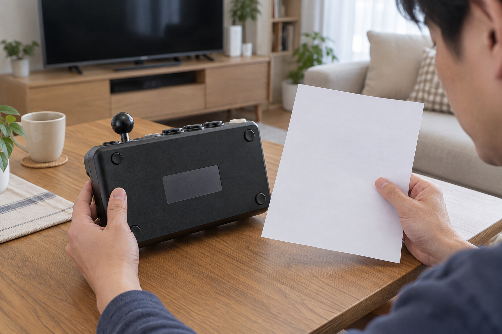
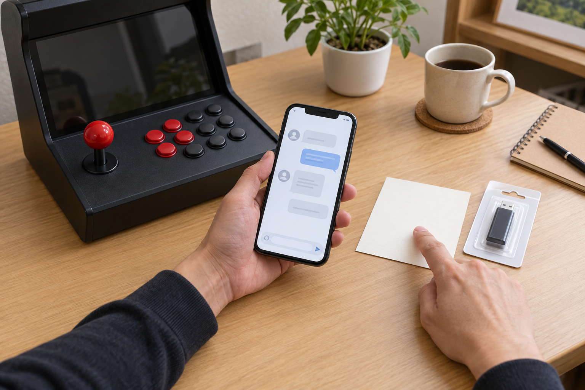

오락기 게임을 나중에 추가하거나 업데이트할 수 있는지는 제품과 게임팩마다 다르므로 모든 기기에 가능하다고 단정할 수 없습니다. 사용 중인 모델명과 현재 게임 구성을 확인하고, 해당 제품에 안내된 지원 방식과 호환 범위를 판매자에게 확인한 뒤 진행하세요.
업데이트 가능 여부는 제품별로 다릅니다
겉모양이 비슷한 오락기라도 내부 구성과 게임팩, 지원되는 추가 방식은 서로 다를 수 있습니다. 노리박스 제품 목록에도 ‘하이퍼PC SW 업데이트 요청’과 ‘GX(FX)전용 추가게임 USB 확장팩’이 별도 항목으로 안내되어 있어, 업데이트와 추가게임 지원이 제품별로 구분된다는 점을 확인할 수 있습니다. 특정 상품에 ‘업데이트가능’이라는 표현이 있어도 다른 제품에 그대로 적용되는 뜻은 아닙니다.
게임 추가와 업데이트 지원 여부는 반드시 사용 중인 제품별 안내로 확인해야 합니다.

모델명과 현재 구성을 먼저 확인하세요
문의하기 전에는 제품의 정확한 모델명, 사용 중인 게임팩 이름, 현재 보이는 메뉴나 버전 정보를 판매 페이지와 안내서에서 찾아 적어 두세요. 같은 모델명처럼 보여도 선택 옵션이나 게임팩이 다르면 안내가 달라질 수 있습니다. 원하는 게임 수록 여부를 확인하는 순서는 구매 전 게임 확인 방법에서도 이어서 볼 수 있습니다.
정확한 모델명과 게임팩을 알아야 내 기기에 맞는 지원 범위를 확인할 수 있습니다.
- 제품명과 모델명 그대로 기록하기
- 게임팩 또는 선택 옵션 이름 확인하기
- 현재 메뉴와 이상 증상 메모하기
- 구매한 판매 페이지와 문의 경로 찾기

임의 변경 전에 공식 안내를 확인하세요
인터넷에서 찾은 다른 제품의 파일이나 방법을 그대로 적용하면 현재 구성과 맞지 않을 수 있습니다. 저장장치 교체, 파일 복사, 기기 분해처럼 되돌리기 어려운 작업은 먼저 하지 말고 판매자가 안내한 절차와 준비물을 확인하세요. 노리박스는 판매 뒤 생기는 사용 문의와 A/S, 부품 문제를 직접 다뤄온 경험을 제품 점검에 반영한다고 소개합니다.
출처가 불분명한 파일보다 해당 제품 판매자의 공식 안내를 먼저 따라야 합니다.
추가게임과 업데이트를 구분하세요
추가게임은 새로운 콘텐츠를 더하는 의미로, 업데이트는 기존 소프트웨어나 구성의 변경을 가리킬 수 있어 문의 내용이 달라집니다. 원하는 결과가 특정 게임 추가인지, 오류 해결인지, 현재 구성의 개선인지 먼저 정리하세요. 구매 후 지원을 요청할 때 준비할 내용은 가정용 오락기 구매 후 지원 기준에서 확인할 수 있습니다.
원하는 결과를 구체적으로 말해야 추가게임과 업데이트 안내를 구분할 수 있습니다.
현재 노리박스 오락실게임기와 관련 제품은 제품자세히보기에서 확인하세요.